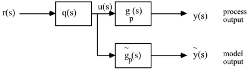
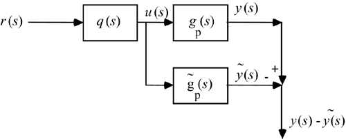
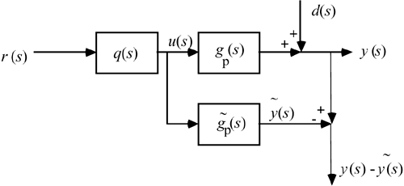
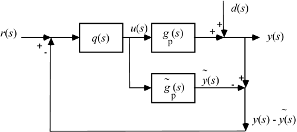

| [ Team LiB ] |
|
8.5 Development of the IMC StructureConsider the open-loop control structure shown in Figure 8-3. We now consider a process model that receives the same manipulated variable signal as the actual process (Figure 8-8). We can now subtract the difference between the process output (actually measured) and the process model output (model predicted) to determine the model error. This is shown in Figure 8-9. We must also realize that disturbances can enter the system, as shown in Figure 8-10. Figure 8-8. Process model in parallel with the actual process. Figure 8-9. Calculating model error. Figure 8-10. Incorporating the process disturbance. Notice that Figure 8-10 shows the calculation of model uncertainty (which includes unmeasured disturbances). This information can now be used by the controller, to compensate for the model uncertainty. This creates a feedback system, as shown in Figure 8-11. Figure 8-11. Feedback structure derived from the open-loop structure. Figure 8-11 is also known as the IMC structure, which is discussed in depth in the next sections. |
| [ Team LiB ] |
|